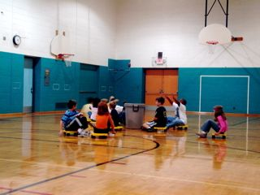
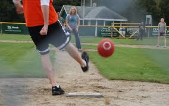
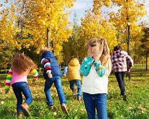
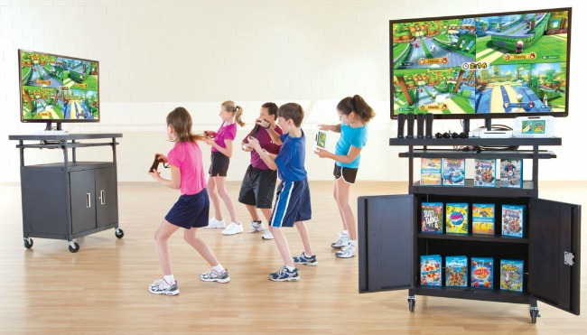
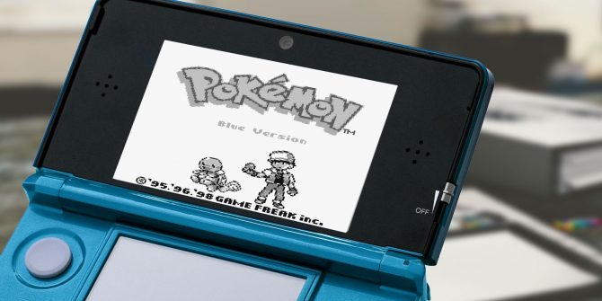

Some of our best times came from playing with our friends, siblings, or just by ourselves; Whether it's physically or electronically.
These are the games we played on the playground during recess, or in gym class. Ofcourse, they existed before our generation but we were probably the last generation to actually go out and play without being told to.
I never knew what these things were called but they were so much fun! (that is, if you didnt get your fingers ran over)
Everyone wanted to play kickball during recess.
Sure, hide and seek was fun, but Man Hunt (especially in the dark) was the best, even though everyone would end up getting hurt.
Videogames are fun now, but from what I remember, I had the most fun playing Wii sports, and pokemon a couple of years ago.
Wii Sports was definitely one of our favorite things back then, as simple as the game is.
DS games were the best whether you're talking to someone on PictoChat or playing Pokemon since it was easy to carry around. Many of us probably remember staying up late playing DS games and hiding it under the covers when our parents came in to check on us.